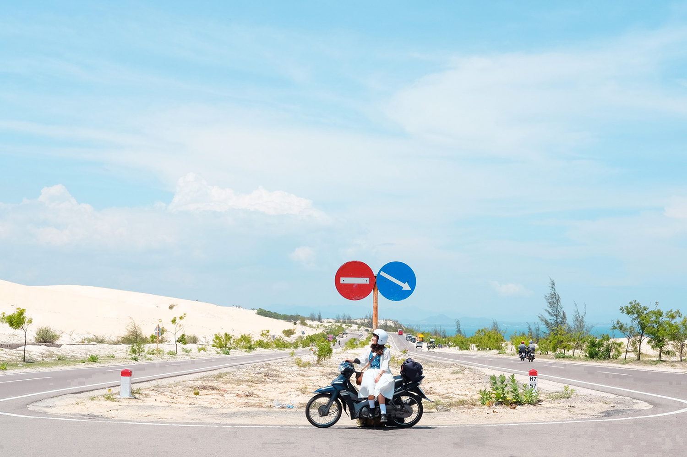

Được biết đến là một trong những bloger travle mới nổi tiếng gần đây, những cô gái này đã có những bài viết hay giới thiệu về du lịch Việt
Từng nhận được nhiều ý kiến trái chiều vì là con gái mà mê du lịch "bụi", Hoàng Anh đã đi qua 51 tỉnh thành khắp Việt Nam, tận mắt chứng kiến nhiều cung đường đẹp.
5 năm trước, Nguyễn Khánh Hoàng Anh (1997), sinh sống và làm việc tại TP HCM, quyết định bắt đầu những chuyến đi của mình. Hành trình này được thực hiện khi cô đang ở năm nhất đại học, có duyên gặp gỡ một nhóm bạn cùng trường mê du lịch. Họ khởi hành đến các tỉnh miền Tây để khám phá khung cảnh bình dị và người dân thân thiện, đồng thời chinh phục cực nam của Tổ quốc. Chuyến đi ấy đã để lại cho Hoàng Anh nhiều kỷ niệm, từ đó khơi dậy đam mê khám phá và gu du lịch của cô sau này. Đến nay, cô gái 24 tuổi đã đặt chân tới 51 tỉnh thành. Hiện tại Hoàng Anh đang là nhân viên văn phòng mảng truyền thông với nghề tay trái là travel blogger, lấy danh xưng Mavis Vi Vu Ký.

Trong hành trình của mình, Hoàng Anh đã đi qua nhiều cung đường đẹp, từ những đường ven biển đến đường đèo quanh co. Cô gái đam mê chinh phục chúng rồi thu lại vào những bức ảnh như một gia tài vô giá. "Việt Nam có nhiều nơi đẹp. Cung đường núi uốn lượn quanh co với những con đèo hùng vĩ, những ngọn núi tầng tầng lớp lớp về phía vô tận, khiến con người nhỏ bé trước thiên nhiên. Cung đường ven biển thì lại có vẻ đẹp dịu dàng rất thơ, với những màu xanh khác nhau của nước. Cảm giác nghe sóng vỗ rì rào khiến tâm hồn mình thoải mái và bình yên", Hoàng Anh tâm sự.
Chia sẻ với VnExpress, Hoàng Anh dành nhiều thiện cảm cho những cung đường đẹp nhất Việt Nam và nổi tiếng trong giới xê dịch như cung Đông - Tây Bắc mùa lúa chín, cung Hà Giang - Đồng Văn - Lũng Cú, ven biển Bình Thuận - Ninh Thuận, ven biển Đà Nẵng - Lăng Cô - Huế, cung đường xuyên các tỉnh Tây Nguyên...

Cung đường Hoàng Anh thấy ấn tượng nhất là hành trình 12 ngày vi vu Đông - Tây Bắc mùa lúa chín. Từ nhỏ, cô gái đã khao khát được đặt chân đến mùa vàng miền núi. Ở đây, Hoàng Anh được thoả sức ngắm những thửa ruộng bậc thang chín vàng, những điểm "săn" lúa nổi tiếng như Sa Pa (Lào Cai), Mù Cang Chải (Yên Bái) và Hoàng Su Phì (Hà Giang), khám phá nét đặc sắc của văn hoá vùng cao, ngắm khung cảnh núi non hùng vỹ của các tỉnh miền núi.
Còn cung đường khiến cô gái khó chinh phục nhất là Điện Biên - Lai Châu để tới điểm cực tây của Tổ Quốc - A Pa Chải. "Đường đi xa xôi, vắng vẻ, núi đồi uốn lượn quanh co và có những đoạn rất xấu. Thêm vào đó, thời tiết ẩm ương của vùng Tây Bắc cũng đôi lúc gây khó khăn cho hành trình. Nhưng khi chinh phục được rồi, mình cảm thấy tự hào vô tận. Mình đã được chạm tay vào điểm cực tây thiêng liêng, chạy xe trên đèo Pha Đin lộng gió, nghe những chiến tích hào hùng Điện Biên Phủ và khám phá những bản làng hoang sơ ở Lai Châu", Hoàng Anh mỉm cười khi nhớ lại những gì mà mình đã nhận được sau hành trình.
Đã đi qua nhiều cung đường như vậy, cô gái 24 tuổi từng trải qua những tình huống "dở khóc dở cười". Hoàng Anh nhớ lại những đêm tối bị lạc đường mà không có mạng, không có đèn đường, chỉ còn cách đi theo các ánh điện le lói từ nhà dân. Cô gái cũng nhớ lại lần bị lạc vào những con đường cát mà "ra không được, vào không xong". Hay lần Hoàng Anh bị thủng bánh xe giữa rừng, lại có biển cảnh báo "Khu vực thường có voi rừng xuất hiện".
Gặp nhiều khó khăn, song cô gái may mắn nhận được sự giúp đỡ nhiều lần từ những người bản địa tốt bụng. Sau nhiều biến cố, cô gái trẻ học được khả năng giữ bình tĩnh, kỹ năng sinh tồn và xử lý tình huống tốt hơn. "Nói về những kỷ niệm với các cung đường mình từng qua, vài dòng là không thể nào kể hết. Nhìn lại các chuyến đi, mình đều có những kỷ niệm tuyệt vời, như có thêm rất nhiều người bạn mới từ Bắc chí Nam, được biết thêm rất nhiều thứ thú vị khi được sống cùng người dân bản địa, được trải nghiệm nhiều điều không có trong sách vở. Những kỷ niệm không vui và những biến cố trong hành trình đều là những bài học quý giá để mình trở nên trưởng thành và tích cực hơn", Hoàng Anh chia sẻ.